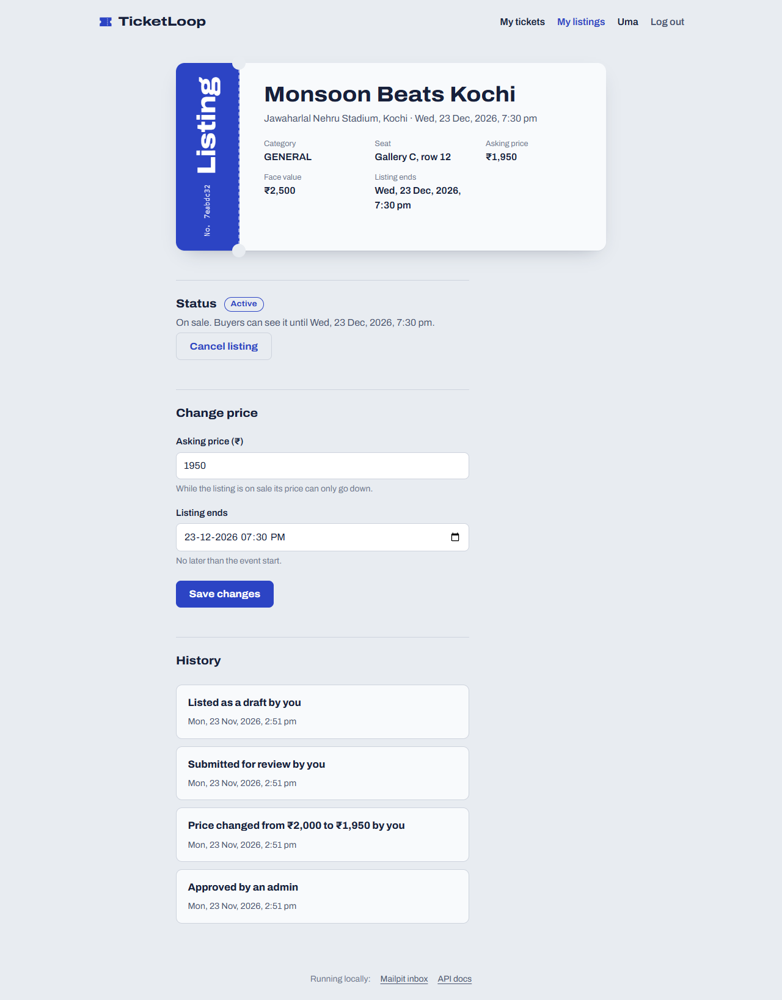
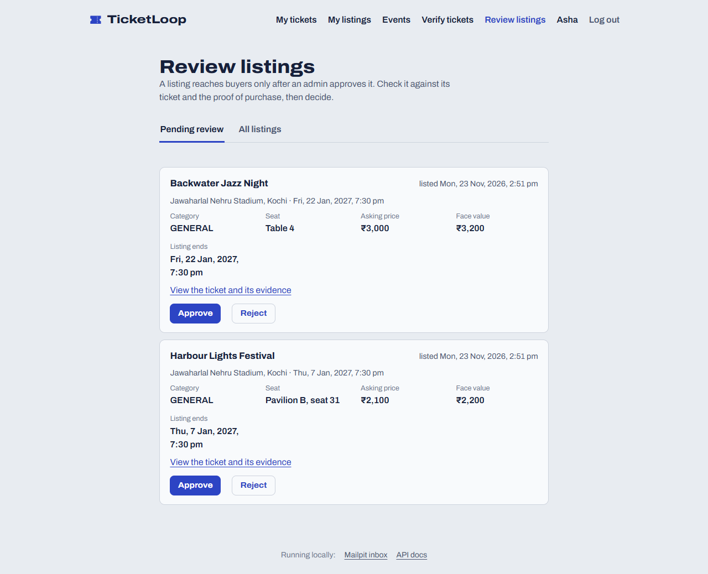
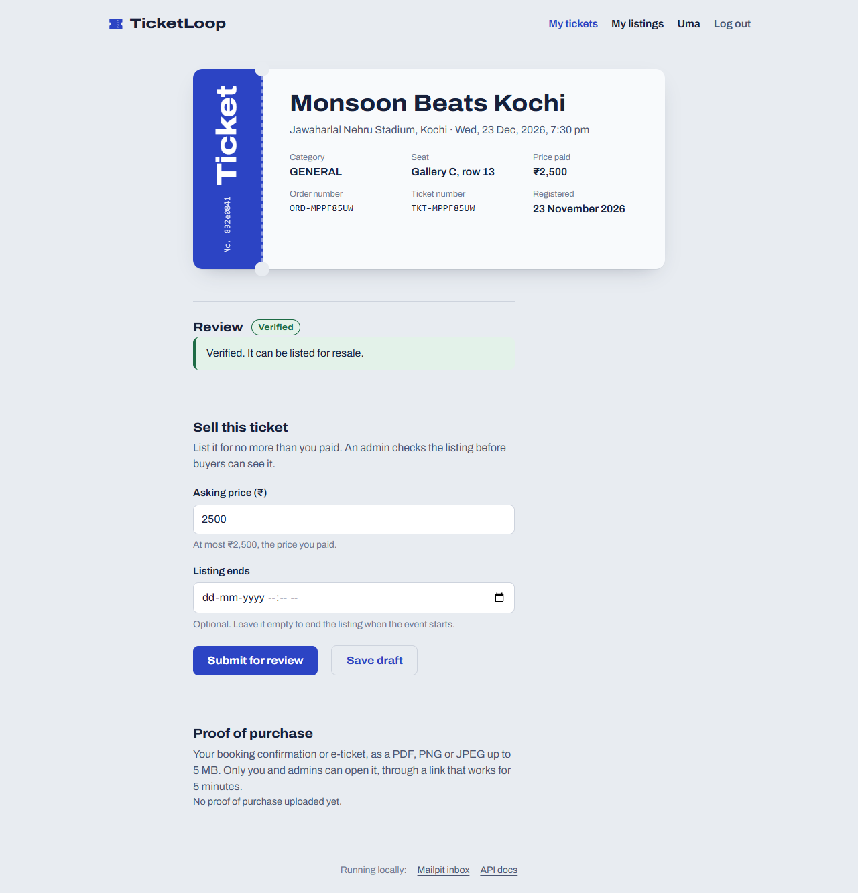
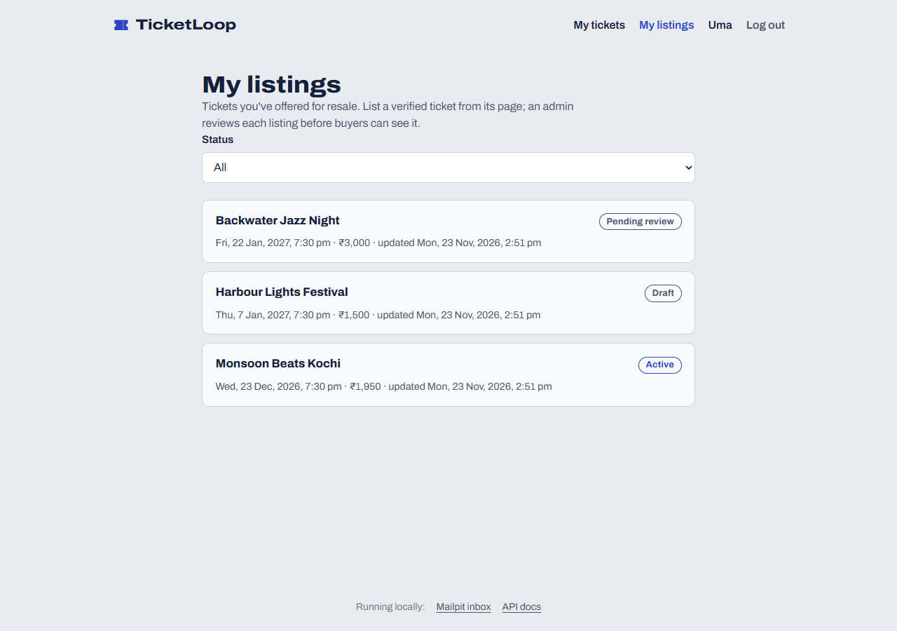
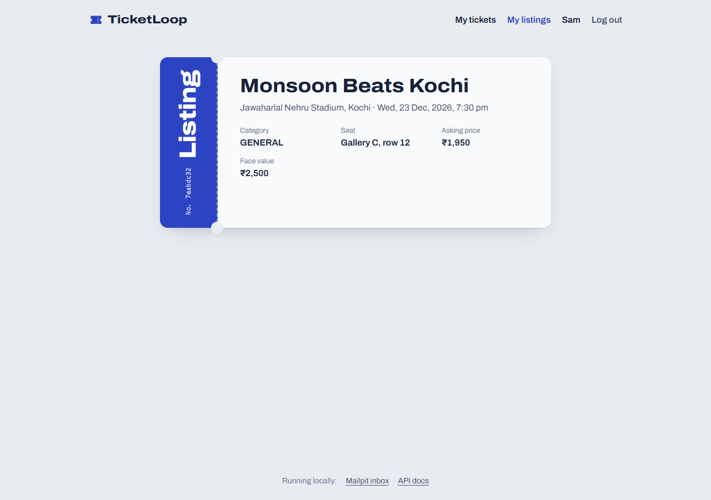

The 30-second answer
A seller turns a verified, transfer-eligible ticket into a listing at any price from ₹1 to what they paid. It starts as a draft; they submit it, and an admin approves or rejects it. Only an approved listing is visible to anyone but the seller and admins, and an admin can never review their own.
Every status change goes through one transition() function. It checks the move against an ALLOWED table, then runs UPDATE … WHERE id = :id AND status = :seen, so if two admins act at once Postgres picks one winner and the other gets a 409. The audit row is written in the same transaction, so a change and its record commit together or not at all.
The race tests use real committed transactions, released together by a barrier, not mocks. A test tries all 64 (from, to) pairs. Cancelling an event takes its open listings with it, and listings past their end expire through the same function.
What I built
- Audit helper
record(db, actor_id=…, entity_type=…, entity_id=…, action=…, details=…)adds a row toaudit_logsin the caller's transaction and flushes. It takes the request ID from the logging context and turns UUIDs and datetimes into strings.created_atisclock_timestamp(), so rows from one transaction keep their order.app/modules/audit/service.py - State machine
ALLOWEDmaps each of the 8 statuses to the ones it may move to.transition()checks it, runs the conditional UPDATE, raisesillegal-listing-transitionorlisting-changed(409s), recordslisting.<action>with{from, to}, and returns the refreshed row.app/modules/listings/state.py - Price and expiry rulesPure functions. The price runs from ₹1 to face value, and an
ACTIVElisting's price may only go down. The expiry must be in the future and no later than the event start. The database CHECKs stay as the last line of defence.app/modules/listings/rules.py - Seller routesCreate (a
DRAFT), submit,PATCHprice or expiry, cancel, my listings (filter by status or ticket), and the history. Create and submit both re-check that the ticket is verified, eligible and active and that the event is open.app/modules/listings/router.pyservice.py - Reading a listing
GET /listings/{id}works with or without a token. Anyone gets anACTIVElisting in the public shape, with no seller and no references. The seller and admins get any status in the full shape. Everything else is the same 404 as a random ID, decided in one function,get_listing_for().app/modules/listings/service.py - Admin reviewThe pending queue (oldest first), every listing with status and ticket filters, approve, and reject with a reason. Approve re-checks the ticket, the event and the expiry. Reviewing your own listing is 403
own-listing-review./api/v1/admin/listings - Audit retrofitsM4's ticket verification, event create and change, and provider create now each write one audit row. Verifying a ticket you own is 403
own-ticket-review. An eventPATCHthat changes nothing writes nothing.app/modules/tickets/service.pyapp/modules/events/service.py - Event cascadeCancelling an event cancels its draft, pending and active listings in the same transaction, locked in id order, one audit row each. Moving its start earlier pulls any later listing expiry back to the new start; putting it back carries listings that ended at the old start forward.
cancel_open_listings_for_eventpull_back_listing_expirypush_forward_listing_expiry - Expiry
ACTIVElistings past their end becomeEXPIREDthroughtransition(), as the system (no actor), withSKIP LOCKED. Run by hand until M11 schedules it.scripts/expire_listings.py - IndexesThe review queue and active-expiry indexes are partial, so each only holds the rows its query needs. Seller listings by time, the event's listings, and an audit log index for one entity's history.
migrations/versions/2026_11_23_de549881b56f_… - FrontendSell this ticket on the ticket page, My listings, the listing page (status, price change, cancel, history), the public view, and Review listings for admins with Pending and All tabs. The ticket page also shows an admin the open listing.
frontend/src/pages/frontend/src/components/TicketListing.tsx - Tests516 backend tests (224 new): all 64 pairs of statuses, 20 route-by-route access checks, a guard that every admin route needs an admin, 3 race tests on committed transactions, the cascade, expiry and the retrofits. 78 frontend unit tests (29 new) and 13 browser tests (4 new).
tests/frontend/e2e/listings.spec.ts
A transition, step by step
Two admins press Approve on the same listing at the same moment. Each request runs these steps in its own transaction.
- 1Who may act, and from where
The service checks the caller first: an admin who isn't the seller (403
own-listing-reviewotherwise), and a listing inPENDING_VERIFICATION, the only state review acts from. It also checks the ticket, the event and the expiry again. - 2Is the move legal at all?
transition()looks upALLOWED[seen], whereseenis the status it read.PENDING_VERIFICATION → ACTIVEis there. A move that isn't, likeSOLD → ACTIVE, is 409illegal-listing-transitionbefore anything is written. - 3The conditional UPDATE
UPDATE listings SET status = 'ACTIVE', reviewed_by = …, updated_at = now() WHERE id = :id AND status = 'PENDING_VERIFICATION' RETURNING id. The first admin's UPDATE takes the row lock. The second waits for it, then re-checks itsWHEREagainst the committed row. - 4Count the rows
The first gets its id back. The second finds the status is now
ACTIVE, updates nothing, and gets no row: 409listing-changed, carrying the current status. Its transaction rolls back. - 5The audit row
For the winner,
record()addslisting.approvedwith{"from": "PENDING_VERIFICATION", "to": "ACTIVE"}, the admin's id and the request ID, in the same transaction. - 6One commit
get_dbcommits once at the end of the request, so the status change and its audit row land together. If anything after the UPDATE fails, both roll back, and the log never claims a change that didn't happen.
moved = db.execute( # app/modules/listings/state.py
update(Listing)
.where(Listing.id == listing.id, Listing.status == seen)
.values(status=to, updated_at=func.now(), **(values or {}))
.returning(Listing.id)
).scalar_one_or_none()
if moved is None: # someone else got there first
db.refresh(listing)
raise ListingChangedError(f"The listing is now {listing.status}.", current_status=listing.status)
record(db, actor_id=actor_id, entity_type="listing", entity_id=listing.id,
action=ACTION[(seen, to)], details={"from": seen, "to": to, **(details or {})})What the tests prove
- The whole machine, pair by pair.
test_listing_transitions.pybuilds a listing in each of the 8 statuses and callstransition()to each of the 8. The allowed moves succeed and write one audit row. The other moves are 409 and leave both the row and the log unchanged. The test keeps its own copy of the table, so changingALLOWEDwithout meaning to fails it. - Races between real transactions. The usual test session runs every request inside one rolled-back transaction, on one connection, where nothing can contend for a lock. The race tests use
committing_api: each request gets its own connection and commits. Athreading.Barrier(2)releases both requests together. Two approvals, an approval against a cancel, and two price cuts: whenever the requests truly overlap exactly one wins, and the audit log always matches the final row. - Timing is honest. When two "simultaneous" requests happen not to overlap, the right answer is what two requests one after the other produce. Each round accepts either correct outcome, and the test fails unless at least one round was a real race.
- Every route that takes a listing ID is listed in
test_listing_access.py. It checks that a stranger gets the same 404 as a random ID, and that an admin on a seller-only action gets 403seller-only. The list comes from the app's own OpenAPI schema, so a new route that isn't listed fails the test. - Every
/adminroute refuses a non-admin. I proved the guard can fail by switching one admin route toCurrentUser: the test caught it. - In a real browser: list, approve, history in order, a second user sees the price but no history, and a draft is "Not found" to them.
Screens
Run docker compose up -d db mailpit minio, the API, and npm run dev in frontend/, then open localhost:5173. The README's "Try the listing flow" walks through it.
- Sell this ticketOn a verified, eligible ticket's page: asking price (checked against what you paid before it's sent), an optional end time, then Submit for review or Save draft. Once listed, the panel shows the listing's status and a link to it.
/tickets/:id - My listingsEvery listing you've made, newest first, with its status. Filter by status.
/listings - Listing (seller)The listing on a stub, its status with what it means, Submit for review for a draft, Change price while it's open, Cancel listing behind a confirm, and the history.
/listings/:id - Listing (anyone else)An active listing's event, seat and prices. No history, no controls. Any other status is the not-found page.
/listings/:id - Review listings (admin)Pending review, oldest first: approve, or reject with a reason; a link to the ticket and its evidence; an expired listing is flagged and can only be rejected. All listings: every listing, filtered by status.
/admin/listings





Decisions
The state machine
One hand-written transition()
Instead of a state-machine library, or a Postgres trigger
A library (transitions, python-statemachine) hides the mechanics this module is meant to teach, and still needs the conditional UPDATE to be correct under concurrency, which it doesn't provide. A trigger would be a strong last line of defence, but it can't see who is acting or the request ID without extra plumbing, and it moves the rules out of the code the tests read. ALLOWED fits on one screen, and the table-driven test reads straight off it.
Each action names its own from-states
Instead of relying on ALLOWED alone
ALLOWED describes the whole machine, including RESERVED → ACTIVE for a released reservation in M8. If approve relied on ALLOWED alone, it would happily "approve" a reserved listing back to active. So each action checks first: review only from pending, edits and seller cancels only from draft, pending or active, admin cancels only from active. Each refusal is its own 409 naming the current status.
The price edit pins what it checked
Instead of WHERE id = :id, or only the status
A price cut is checked against the price it read: an active listing may only get cheaper. If two cuts both read ₹2,000 and pass, an UPDATE on id alone lets the last one win, possibly raising the price the first had just cut. The PATCH repeats the status, price and expiry it read in its WHERE, so the second finds the row changed and gets listing-changed. It also can't land on a listing an admin rejected a moment ago.
FOR UPDATE OF listings
Instead of a bare FOR UPDATE
A listing loads its ticket and event in the same query (joined eager loading). A bare FOR UPDATE locks every row in the result, so the expiry job would also lock events and block an admin editing one. with_for_update(of=Listing) locks only the listing rows. The cascade locks in id order, so two callers can't deadlock. Expiry uses SKIP LOCKED, so a listing someone is changing waits for the next run instead of holding the job up. populate_existing makes the locked read replace any stale copy in the session.
The audit log
An explicit record() call
Instead of SQLAlchemy event listeners, or triggers
Listeners fire on ORM flushes, and a conditional UPDATE is a Core update() that bypasses them, which is exactly the statement I most need audited. Explicit calls are visible at every call site and testable one by one. Because record() only adds to the caller's session, the row shares the change's transaction: a rolled-back change takes its audit row with it, and a test proves that.
clock_timestamp() for created_at
Instead of the column default now()
Postgres now() is the transaction's start time. An event cancel writes the event's row and then one per listing in one transaction, so those rows had identical times, and a listing's history could come back in any order. clock_timestamp() is the time of the write itself. No schema change.
The history shows a role, not a person
Instead of returning audit rows as they are
The seller sees "approved by an admin", never which one: knowing who reviewed you invites pressure on that person. actor_role is worked out per row (seller, admin or system), and only a fixed list of detail keys (reason, prices, expiries) leaves the log. Anything else an audit row holds stays there, for M13's admin audit view.
The rules
A draft, then submit
Instead of create going straight to review
The build plan's wording had create send the listing for review. The API contract and the state-machine doc start at DRAFT, and so does plan.md's lifecycle, so the contract won. A seller can fix a draft before an admin sees it. The ticket page's Submit for review makes two calls; if the second fails, the draft stays and its page says why.
No self-review
Instead of trusting admins to recuse themselves
An admin approving their own listing, or verifying their own ticket, is exactly what an audit log exists to catch, so it's refused outright: 403 own-listing-review or own-ticket-review. Nothing changes and no row is written. A second admin can still review it. This was the project owner's call; I'm the project owner.
Cancelling an event cancels its listings
Instead of refusing the cancel while listings are open
An event that isn't happening shouldn't stay on sale, and a seller shouldn't be able to block an admin by keeping a listing open. Refusing would only make the admin cancel listings one by one first. The cascade runs in the event's transaction with an audit row per listing (reason: event_cancelled), and the event's own row counts them. Reserved listings can't exist yet; M8 decides what happens to one whose buyer is mid-payment.
Pending listings don't expire
Instead of a PENDING_VERIFICATION → EXPIRED move
Nobody can buy a pending listing, so its end passing harms nobody. Instead, approve refuses one whose end has passed (409 listing-not-approvable). The seller can move the end and it can be approved, or the admin rejects it. The review screen flags it and offers only Reject.
403 for an admin, 404 for everyone else
Instead of one answer for every non-seller
An admin can already see the listing, so hiding it behind a 404 when they try to change its price would be pointless: they get 403 seller-only. A stranger can't see a non-active listing, so they get exactly the 404 a random ID gets, as in M4. An admin who is the seller is treated as the seller on their own listing.
Frontend
Who is looking is part of the cache key
Instead of caching a listing by its id alone
The same address answers in two shapes: the public one, or the full one for the seller and admins. Cached under the id alone, a guest's public copy could be shown to the seller after they log in, with no controls. The key is ["listing", id, userId or "guest"], and the request waits until the app knows whether anyone is signed in.
Interview questions
Answer out loud first, then open.
Why check the current state inside the UPDATE's WHERE clause instead of reading it first in Python?
Because a read followed by a write leaves a gap. Two admins both read PENDING_VERIFICATION, both decide the move is fine, and both write: one approves, the other's reject lands on top, and the log shows two decisions for one listing. With WHERE id = :id AND status = :seen, the database makes the check and the write one atomic step. The first UPDATE takes the row lock; the second waits, and under Read Committed re-checks its WHERE against the committed row, finds the status changed, and updates zero rows. Zero rows back means someone got there first, so I answer 409 with the current status. A SELECT … FOR UPDATE first would also work, but it costs an extra round trip and holds a lock while Python thinks. The conditional UPDATE is the same pattern M8 uses to stop two buyers reserving one ticket.
What happens to the audit row when the listing update fails?
It never exists. record() adds the row to the same session as the change, and nothing commits until the request ends. If the conditional UPDATE finds zero rows, transition() raises before it even calls record(). If something fails after the row is added, like a later check or the commit itself, the whole transaction rolls back and the audit row goes with it. So the log can't claim a change that didn't happen, and a change can't land without its row. One test moves a listing, makes a later step in the same transaction fail, and checks the status change and its audit row are both gone. The other half is the append-only trigger: once committed, an audit row can't be updated or deleted.
Why not use a state-machine library?
A library answers "is this move legal", which is the easy part: a dictionary does it in 8 lines. The hard part is applying the move safely when two requests race, and libraries do that in memory, on an object. Two processes each holding their own copy would both pass. I'd still need the conditional UPDATE, plus glue to make the library's callbacks write the audit row in the right transaction. Hand-written, the whole machine fits on a screen and the tests read straight off the table.
How do you test a race condition?
With real concurrency against the real database. My normal tests run each test in one rolled-back transaction on one connection, so two "requests" can't contend for a lock at all. A race test passing there proves nothing. The race tests give each request its own connection that commits. Two threads wait on a barrier and fire together. Then I check the outcome and the audit log agree: one approval row, the final status matching the winner. Timing isn't guaranteed, so each round accepts any correct outcome, including the one-after-the-other result, and the test fails unless at least one round really raced. Cleanup deletes what the test created, except audit rows, which the append-only trigger protects.
Why can't an admin approve their own listing?
Review exists so that someone other than the seller checks the listing against the evidence. An admin approving their own listing defeats that, and an audit log would only record it after the fact. So it's refused before anything changes: 403 own-listing-review, and the same rule for verifying a ticket you own. It's a 403, not a 404, because the admin can plainly see the listing. Another admin can still review it.
What happens to listings when an event is cancelled?
They're cancelled in the same transaction as the event. The cascade selects the event's draft, pending and active listings with FOR UPDATE OF listings, in id order so two callers can't deadlock, and moves each through transition(). That gives an audit row per listing with reason: event_cancelled, and the seller's history reads "Cancelled because the event was cancelled". If anything fails, the event stays published and every listing stays as it was. Reserved listings can't exist yet. When they can, a buyer may be mid-payment, so M8 has to decide whether to refund or wait.
Why lock with FOR UPDATE OF listings rather than plain FOR UPDATE?
The listing query joins in the ticket and the event, because the model loads them eagerly. Plain FOR UPDATE locks every row the query returns, from every table. So the expiry job would also lock event rows, and an admin editing that event would wait for the job. With an outer join Postgres refuses outright: it can't lock the nullable side. OF listings locks only the rows I'm about to change. The expiry job adds SKIP LOCKED, so a listing that's mid-change is simply left for the next run.
Why does the seller see "an admin" instead of the admin's name?
Least privilege for the reviewer. A seller who knows which admin rejected them can lean on that person, and nothing they need depends on the name. The audit row keeps the real actor_id for other admins and later investigations. The history endpoint turns it into a role and passes through only a fixed list of detail keys, so a future audit field can't leak to sellers by accident.
How do you stop one ticket being listed twice?
The database decides, not a check in Python. A partial unique index, uq_listings_one_open_per_ticket, covers ticket_id only for draft, pending, active and reserved rows. Closed listings don't count, so a ticket can be listed again after one is cancelled or expires. Create flushes inside a savepoint. If the index refuses the insert, the service checks which constraint fired and answers 409 listing-already-open. A check-then-insert would let two simultaneous requests both pass the check.
Traps and fixes
- The history came back shuffled. Audit rows written in one transaction all had the transaction's start time from
now(), so ordering by time was a coin toss.record()now stampsclock_timestamp(); a test writes two rows in one transaction and checks the second is later. - The first race test was flaky, and "fixing" it would have hidden real bugs. It demanded one 200 and one 409 every round. When the two requests didn't overlap, it legitimately got two 200s, or a different 409. It now accepts every correct outcome per round, checks the final row and the log agree, and requires at least one real race.
- A race test can't run in a rolled-back transaction. On one connection, the second request just sees the first one's uncommitted change, and nothing waits on a lock. The race tests commit for real, and clean up by deleting what they made, except audit rows, which the trigger rightly refuses to delete.
- An event
PATCHthat changed nothing wrote an audit row. Sending the same name again ran an UPDATE with identical values and recordedevent.updated. It now compares values first and returns early when nothing differs. - A new factory default broke an M2 test.
make_listingnow gives a rejected listing a reason, which the CHECK needs. The M2 test that proves a rejection without a reason is refused had relied on the old default; it now passesrejection_reason=Noneitself. - "Saved." never appeared after a price change. The form is keyed by
updated_atso it resets to the saved values. But the save changesupdated_at, which remounted the form and threw away the save's success state with it. The save now lives outside the keyed form. I found it while taking the screenshots, and a browser test now pins it. - A postponed event cut its listings short. A listing created without an end gets the event's start, copied at that moment. Moving the start earlier pulled later ends back, but moving it later left them at the old time, so a listing whose form said "ends when the event starts" would have expired days early. The final review caught it. Putting an event back now carries every open listing that ended at the old start forward with it.
- The savepoint wasn't one. Create added the row, then opened
begin_nested()and flushed. Butbegin_nested()flushes whatever is pending before it issuesSAVEPOINT, so the INSERT ran outside it, and a duplicate took the whole transaction down. Over HTTP the answer was still a 409, which hid it; in a session joined to an outer transaction the duplicate surfaced asPendingRollbackErrorinstead. The row is now added inside the block, here and at M4's two sites, and a test per site checks that the session carries on after a refused duplicate. - A loop of lambdas tripped the linter. Ruff's B023 flags a lambda that captures a loop variable, because each one sees the variable's last value. The race tests use
functools.partial, which binds the value at once. - Every Vitest suite failed with "failed to find the current suite". On Windows, running from
e:\instead ofE:\made Node load two copies of Vitest, one per spelling of the path. Running from the uppercase path fixed it; CI never sees it.
Known gaps, on purpose
- Expiry runs by hand. Until M11 schedules it, an active listing past its end stays visible until someone runs
scripts.expire_listings. - No notifications. The seller finds out about an approval or rejection by looking. Notifications arrive in M12.
- No public browsing. An active listing is reachable by its address only. Search, filters and the event's listings come in M6.
- The review queue orders by when the listing was created, not when it was submitted, to avoid a new column. A draft that sat for a week jumps the queue when submitted.
- Editing a pending listing doesn't send it back to the start of review. The admin sees the current price when they decide, and the history shows the change.
Check it still works
docker compose up -d db mailpit minio
uv run alembic upgrade head
uv run pytest tests/unit/test_listing_rules.py # 9 tests, no services
uv run pytest tests/integration/test_listing_transitions.py # 68 tests: all 64 pairs, and the table
uv run pytest tests/integration/test_listing_races.py # 3 races on committed transactions
uv run pytest tests/integration/test_listing_access.py tests/integration/test_admin_routes.py # the route guards
REQUIRE_POSTGRES=1 REQUIRE_STORAGE=1 uv run pytest # 516 tests, what CI runs
uv run uvicorn app.main:app --reload # /docs
uv run python -m scripts.make_admin you@example.in # unlocks Review listings
uv run python -m scripts.expire_listings # Expired N listing(s).
cd frontend && npm run dev # localhost:5173
npm test # 78 unit tests
npm run e2e # 13 browser tests, 4 for this module
gh run list --workflow ci.yml --limit 3 # the CI runs on GitHub